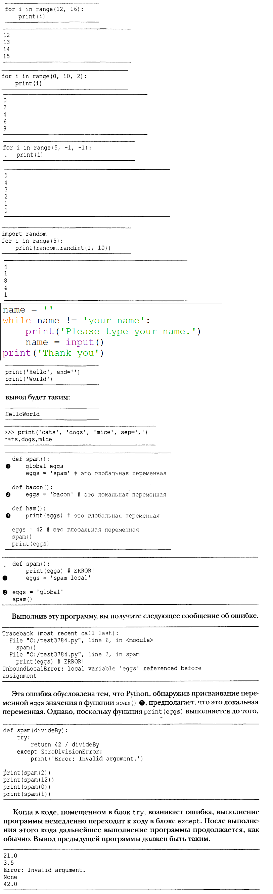

Поздороваться
print('Hello world!')
print('What is your name?') # ask for their name
myName = input()
print('It is good to meet you, ' + myName)
print('The length of your name is:')
print(len(myName))
print('What is your age?') # ask for their age
myAge = input()
print('You will be ' + str(int(myAge) + 1) + ' in a year.')
Введите пароль
name = ''
while name != 'пароль':
print('Пожалуйста, введите пароль.')
name = input()
print('Спасибо!')
Пароль swordfish
while True:
print('Who are you?')
name = input()
if name != 'Joe':
continue
print('Hello, Joe. What is the password? (It is a fish.)')
password = input()
if password == 'swordfish':
break
print('Access granted.')
Угадай число
# This is a guess the number game.
import random
secretNumber = random.randint(1, 20)
print('I am thinking of a number between 1 and 20.')
# Ask the player to guess 6 times.
for guessesTaken in range(1, 7):
print('Take a guess.')
guess = int(input())
if guess < secretNumber:
print('Your guess is too low.')
elif guess > secretNumber:
print('Your guess is too high.')
else:
break # This condition is the correct guess!
if guess == secretNumber:
print('Good job! You guessed my number in ' + str(guessesTaken) + ' guesses!')
else:
print('Nope. The number I was thinking of was ' + str(secretNumber))
Все мои кошки
catNames = []
while True:
print('Enter the name of cat ' + str(len(catNames) + 1) + ' (Or enter nothing to stop.):')
name = input()
if name == '':
break
catNames = catNames + [name] # list concatenation
print('The cat names are:')
for name in catNames:
print(' ' + name)
Волшебный шар 8
import random
messages = ['It is certain',
'It is decidedly so',
'Yes definitely',
'Reply hazy try again',
'Ask again later',
'Concentrate and ask again',
'My reply is no',
'Outlook not so good',
'Very doubtful']
print(messages[random.randint(0, len(messages) - 1)])
Проверка дня рождения
birthdays = {'Alice': 'Apr 1', 'Bob': 'Dec 12', 'Carol': 'Mar 4'}
while True:
print('Enter a name: (blank to quit)')
name = input()
if name == '':
break
if name in birthdays:
print(birthdays[name] + ' is the birthday of ' + name)
else:
print('I do not have birthday information for ' + name)
print('What is their birthday?')
bday = input()
birthdays[name] = bday
print('Birthday database updated.')
Крестики нолики
theBoard = {'top-L': ' ', 'top-M': ' ', 'top-R': ' ',
'mid-L': ' ', 'mid-M': ' ', 'mid-R': ' ',
'low-L': ' ', 'low-M': ' ', 'low-R': ' '}
def printBoard(board):
print(board['top-L'] + '|' + board['top-M'] + '|' + board['top-R'])
print('-+-+-')
print(board['mid-L'] + '|' + board['mid-M'] + '|' + board['mid-R'])
print('-+-+-')
print(board['low-L'] + '|' + board['low-M'] + '|' + board['low-R'])
turn = 'X'
for i in range(9):
printBoard(theBoard)
print('Turn for ' + turn + '. Move on which space?')
move = input()
theBoard[move] = turn
if turn == 'X':
turn = 'O'
else:
turn = 'X'
printBoard(theBoard)
Парольная защита
- установить git
- установить python
- создать проект и сохранить как pw.py
- создать папку и добавить туда проект
- внутри папки правой кнопкой мыши нажать Open git bash here
- напечатать команду pip install pyperclip
- напечатать команду py pw.py email
- пароль от email скопирован в буфер обмена
PASSWORDS = {'email': 'F7min@Bx_!#_!#@xFtjVB6',
'blog': 'VmALvQ)!*!#@!_01MF3sdt',
'vk': '3(*&$@$JSDFSK++!0935'}
import sys, pyperclip
if len(sys.argv) < 2:
print('Введите: py pw.py email')
sys.exit()
account = sys.argv[1]
if account in PASSWORDS:
pyperclip.copy(PASSWORDS[account])
print('Пароль для ' + account + ' скопирован.')
else:
print('Нет такого пароля для ' + account)
Добавляет * в начало каждой строки скопированного текста
import pyperclip
text = pyperclip.paste()
#Separate lines and add stars.
lines = text.split('\n')
for i in range(len(lines)):
lines[i] = '* ' + lines[i]
text = '\n'.join(lines)
pyperclip.copy(text)
Поиск телефонного номера без регулярных выражений
def isPhoneNumber(text):
if len(text) != 12:
return False
for i in range(0, 3):
if not text[i].isdecimal():
return False
if text[3] != '-':
return False
for i in range(4, 7):
if not text[i].isdecimal():
return False
if text[7] != '-':
return False
for i in range(8, 12):
if not text[i].isdecimal():
return False
return True
print('415-555-4242 is a phone number:')
print(isPhoneNumber('415-555-4242'))
print('Some Number is a phone number:')
print(isPhoneNumber('Some Number'))
